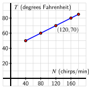
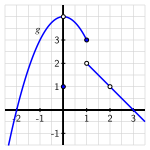

¿Cómo podemos usar la idea matemática de una función para representar la relación entre dos cantidades que cambian?
¿Cuáles son algunas características formales de una función matemática abstracta? ¿Cómo pensamos de manera diferente sobre estas características en el contexto de un modelo físico?
Un modelo matemático es un concepto abstracto a través del cual usamos el lenguaje y la notación matemática para describir un fenómeno en el mundo que nos rodea. Un ejemplo de un modelo matemático se encuentra en La Ley de Dolbear 1
Puedes leer más en la entrada de Wikipedia sobre la Ley de Dolbear, que ha demostrado ser notablemente precisa para el comportamiento de los grillos de árbol nevados. Para conocer más sobre esta historia, incluyendo una referencia a este fenómeno en el popular programa The Big Bang Theory, consulta este artículo.
. En la década de 1800, el físico Amos Dolbear estaba escuchando el canto de los grillos y notó un patrón: la frecuencia de los cantos de los grillos parecía estar relacionada con la temperatura exterior. Si dejamos que \(T\) represente la temperatura en grados Fahrenheit y \(N\) el número de chirridos por minuto, podemos resumir las observaciones de Dolbear en la siguiente tabla.
Table1.2.1.Datos de las observaciones de Dolbear.
\(N\) (chirridos por minuto)
\(40\)
\(80\)
\(120\)
\(160\)
\(T\) (\(^\circ\) Fahrenheit)
\(50^\circ\)
\(60^\circ\)
\(70^\circ\)
\(80^\circ\)
Para un modelo matemático, a menudo buscamos una fórmula algebraica que capture el comportamiento observado con precisión y que pueda usarse para predecir un comportamiento aún no observado. Para los datos en Tabla 1.2.1, observamos que cada uno de los pares ordenados en la tabla hace que la ecuación
\begin{equation}
T = 40 + 0.25N\tag{1.2.1}
\end{equation}
sea verdadera. Por ejemplo, \(70 = 40 + 0.25(120)\text{.}\) De hecho, los científicos que realizaron muchas observaciones adicionales de chirridos de grillos después de los conteos iniciales de Dolbear encontraron que la fórmula en Ecuación (1.2.1) se mantiene con una precisión notable para el grillo de árbol nevado en temperaturas que van desde aproximadamente \(50^\circ\) F hasta \(85^\circ\) F.
Preview Activity1.2.1.
Usa la Ecuación (1.2.1) para responder a las preguntas a continuación.
Si escuchamos grillos de árbol nevados cantando a una tasa de \(92\) chirridos por minuto, ¿qué sugiere el modelo de Dolbear que debería ser la temperatura exterior?
Si la temperatura exterior es de \(77^\circ\) F, ¿cuántos chirridos por minuto deberíamos esperar escuchar?
¿Es válido el modelo para determinar el número de chirridos que uno debería escuchar cuando la temperatura exterior es de \(35^\circ\) F? ¿Por qué o por qué no?
Supongamos que por la mañana un observador escucha \(65\) chirridos por minuto, y varias horas más tarde escucha \(75\) chirridos por minuto. ¿Cuánto ha subido la temperatura entre las observaciones?
Se sabe que la Ley de Dolbear es precisa para temperaturas de \(50^\circ\) a \(85^\circ\text{.}\) ¿Cuál es el menor número de chirridos por minuto que un observador podría esperar escuchar? ¿El mayor número de chirridos por minuto?
Subsection1.2.1Funciones
El concepto matemático de una función es una de las ideas más centrales en toda la matemática, en parte porque las funciones proporcionan una herramienta importante para representar y explicar patrones. En su esencia, una función es un proceso repetible que toma una colección de valores de entrada y genera una colección correspondiente de valores de salida con la propiedad de que si usamos una entrada particular, el proceso siempre produce exactamente la misma salida.
Por ejemplo, la Ley de Dolbear en Ecuación (1.2.1) proporciona un proceso que toma un número dado de chirridos entre \(40\) y \(180\) por minuto y produce de manera fiable la temperatura correspondiente que se relaciona con el número de chirridos, y así esta ecuación genera una función. A menudo damos nombres abreviados a las funciones; usando “\(D\)” para la función “Dolbear”, podemos representar el proceso de tomar entradas (tasas de chirridos observadas) a salidas (temperaturas correspondientes) usando flechas:
\begin{align*}
80 &\xrightarrow{D} 60\\
120 &\xrightarrow{D} 70\\
N &\xrightarrow{D} 40 + 0.25 N
\end{align*}
Alternativamente, para la relación “\(80 \xrightarrow{D} 60\)” también podemos usar la notación equivalente “\(D(80) = 60\)” para indicar que la Ley de Dolbear toma una entrada de \(80\) chirridos por minuto y produce una salida correspondiente de \(60\) grados Fahrenheit. Más generalmente, escribimos “\(T = D(N) = 40 + 0.25N\)” para indicar que una cierta temperatura, \(T\text{,}\) está determinada por un número dado de chirridos por minuto, \(N\text{,}\) según el proceso \(D(N) = 40 + 0.25N\text{.}\)
Las tablas y los gráficos son formas particularmente valiosas de caracterizar y representar funciones. Para el ejemplo actual, resumimos algunos de los datos que la función de Dolbear genera en Tabla 1.2.2 y graficamos esos datos junto con la curva subyacente en Figura 1.2.3.
\(N\)
\(T\)
\(40\)
\(50\)
\(80\)
\(60\)
\(120\)
\(70\)
\(160\)
\(80\)
\(180\)
\(85\)
Table1.2.2.Datos para la función \(T = D(N) = 40 + 0.25N\text{.}\)
Figure1.2.3.Gráfico de los datos de la función \(T = D(N) = 40 + 0.25N\) and the underlying curve.
Cuando un punto como \((120,70)\) en la Figura 1.2.3 se encuentra en el gráfico de una función, esto indica la correspondencia entre entrada y salida: cuando se introduce el valor \(120\) chirridos por minuto en la función \(D\text{,}\) el resultado es \(70\) grados Fahrenheit. Más concisamente, \(D(120) = 70\text{.}\) En voz alta, leemos “\(D\) de \(120\) es \(70\)”.
Para la mayoría de los conceptos importantes en matemáticas, la comunidad matemática decide sobre definiciones formales para asegurar que tengamos un lenguaje compartido de entendimiento. En este texto, utilizaremos la siguiente definición del término “función”.
Definition1.2.4.
Una función es un proceso que puede aplicarse a una colección de valores de entrada para producir una colección correspondiente de valores de salida de tal manera que el proceso produce un solo valor de salida para cualquier valor de entrada único.
Si nombramos una función dada \(F\) y llamamos a la colección de posibles entradas a \(F\) el conjunto \(A\) y la colección correspondiente de posibles salidas \(B\text{,}\) decimos “\(F\) es una función de \(A\) a \(B\text{,}\)” y a veces escribimos “\(F : A \to B\text{.}\)” Cuando un valor de entrada particular para \(F\text{,}\) digamos \(t\text{,}\) produce una salida correspondiente \(z\text{,}\) escribimos “\(F(t) = z\)” y leemos esta notación simbólica como “\(F\) de \(t\) es \(z\text{.}\)” A menudo llamamos a \(t\) la variable independiente y a \(z\) la variable dependiente , ya que \(z\) es una función de \(t\text{.}\)
Definition1.2.5.
Sea \(F\) una función de \(A\) a \(B\text{.}\) El conjunto \(A\) de posibles entradas a \(F\) se llama el dominio de \(F\text{;}\) el conjunto \(B\) de posibles salidas de \(F\) se llama el codominio de \(F\text{.}\)
Para la función de Dolbear \(D(N) = 40 + 0.25N\) en el contexto de modelar la temperatura como una función del número de chirridos de grillos por minuto, el dominio de la función es \(A = [40,180]\) 2
La notación “\([40,180]\)” significa “la colección de todos los números reales \(x\) que satisfacen \(40 \le x \le 80\)” y a veces se llama “notación de intervalo”.
y el codominio es “todas las temperaturas en Fahrenheit”. El codominio de una función es la colección de salidas posibles, que distinguimos de la colección de salidas reales.
Definition1.2.6.
Sea \(F\) una función de \(A\) a \(B\text{.}\) El rango de \(F\) es la colección de todas las salidas reales de la función. Es decir, el rango es la colección de todos los elementos \(y\) en \(B\) para los cuales es posible encontrar un elemento \(x\) en \(A\) tal que \(F(x) = y\text{.}\)
En muchas situaciones, el rango de una función es mucho más difícil de determinar que su codominio. Para la función de Dolbear, el rango es fácil de encontrar usando el gráfico mostrado en la Figura 1.2.3: dado que las salidas reales de \(D\) están entre \(T = 50\) y \(T = 85\) e incluyen todos los valores en ese intervalo, el rango de \(D\) es \([50,85]\text{.}\)
El rango de cualquier función es siempre un subconjunto del codominio. Es posible que el rango sea igual al codominio.
Activity1.2.2.
Considera un tanque esférico de radio \(4\) m que se está llenando de agua. Sea \(V\) el volumen de agua en el tanque (en metros cúbicos) en un momento dado, y \(h\) la profundidad del agua (en metros) al mismo tiempo. Se puede demostrar usando cálculo que \(V\) es una función de \(h\) según la regla
\begin{equation*}
V = f(h) = \frac{\pi}{3} h^2(12-h)\text{.}
\end{equation*}
¿Qué valores de \(h\) tienen sentido considerar en el contexto de esta función? ¿Qué valores de \(V\) tienen sentido en el mismo contexto?
¿Cuál es el dominio de la función \(f\) en el contexto del tanque esférico? ¿Por qué? ¿Cuál es el codominio correspondiente? ¿Por qué?
Determine e interprete (con las unidades apropiadas) los valores \(f(2)\text{,}\)\(f(4)\text{,}\) y \(f(8)\text{.}\) ¿Qué es importante sobre el valor de \(f(8)\text{?}\)
Considera la afirmación: “dado que \(f(9) = \frac{\pi}{3} 9^2(12-9) = 81\pi \approx 254.47\text{,}\) cuando el agua tiene \(9\) metros de profundidad, hay aproximadamente \(254.47\) metros cúbicos de agua en el tanque”. ¿Es válida esta afirmación? ¿Por qué o por qué no? Además, ¿tiene sentido observar que “\(f(13) = -\frac{169\pi}{3}\)”? ¿Por qué o por qué no?
¿Puedes determinar un valor de \(h\) para el cual \(f(h) = 300\) metros cúbicos?
Subsection1.2.2Comparando modelos y funciones abstractas
Nuevamente, un modelo matemático es un concepto abstracto mediante el cual utilizamos lenguaje y notación matemática para describir un fenómeno en el mundo que nos rodea. Hasta ahora, hemos considerado dos ejemplos diferentes: la función de Dolbear, \(T = D(N) = 40 + 0.25N\text{,}\) que modela cómo la temperatura en grados Fahrenheit es una función del número de chirridos de grillos por minuto, y la función \(V = f(h) = \frac{\pi}{3}h^2(12-h)\) que modela cómo el volumen de agua en un tanque esférico de radio \(4\) m es una función de la profundidad del agua en el tanque. Aunque a menudo consideramos una función en el contexto físico de algún modelo, también hay muchas ocasiones en las que consideramos una función abstracta por sí misma para estudiarla y comprenderla.
Example1.2.7.Una parábola y una bola en caída.
El cálculo muestra que para una pelota de tenis lanzada verticalmente desde una ventana a \(48\) pies sobre el suelo con una velocidad vertical inicial de \(32\) pies por segundo, la altura de la pelota sobre el suelo en el tiempo \(t\) (donde \(t = 0\) es el instante en que se lanza la pelota) puede ser modelada por la función \(h = g(t) = -16t^2 + 32t + 48\text{.}\) Discuta las diferencias entre el modelo \(g\) y la función abstracta \(f\) determinada por \(y = f(x) = -16x^2 + 32x + 48\text{.}\)
Solution.
Comenzamos con la función abstracta \(y = f(x) = -16x^2 + 32x + 48\text{.}\) En ausencia de un contexto físico, podemos investigar el comportamiento de esta función calculando valores de la función, trazando puntos y pensando en su comportamiento general. Reconocemos que la función \(f\) es cuadrática 3
Realizaremos una breve revisión de las funciones cuadráticas en la Sección 1.5
, notando que se abre hacia abajo debido al coeficiente principal de \(-16\text{,}\) con el vértice ubicado en \(x = \frac{-32}{2(-16)} = 1\text{,}\) la intersección con el eje \(y\) en \((0,48)\) y las intersecciones con el eje \(x\) en \((-1,0)\) y \((3,0)\) porque
Calculando algunos puntos adicionales para obtener más información, vemos tanto los datos en la Tabla 1.2.8 como el gráfico correspondiente en la Figura 1.2.9.
\(x\)
\(f(x)\)
\(-2\)
\(-80\)
\(-1\)
\(0\)
\(0\)
\(48\)
\(1\)
\(64\)
\(2\)
\(48\)
\(3\)
\(0\)
\(4\)
\(-80\)
Table1.2.8.Datos para la función \(y = f(x) = -16x^2 + 32x + 48\text{.}\)
Figure1.2.9.Gráfico de la función \(y = f(x)\) y algunos datos de la tabla
Para esta función abstracta, su dominio es “todos los números reales” ya que podemos ingresar cualquier número real \(x\) que deseemos en la fórmula \(f(x) = -16x^2 + 32x + 48\) y obtener un resultado definido. Además, tomar un número real \(x\) y procesarlo en la fórmula \(f(x) = -16x^2 + 32x + 48\) producirá otro número real. Esto nos dice que el codominio de la función abstracta \(f\) es también “todos los números reales.” Finalmente, a partir del gráfico y los datos, observamos que el mayor valor posible de la función \(f\) es \(y = 64\text{.}\) Es evidente que podemos generar cualquier valor de \(y\) menor o igual a \(64\text{,}\) y así el rango de la función abstracta \(f\) es todos los números reales menores o iguales a \(64\text{.}\) Denotamos esta colección de números reales utilizando la notación de intervalo \((-\infty, 64]\text{.}\) 4
La notación \((-\infty,64]\) representa todos los números reales que se encuentran a la izquierda de e incluyendo \(64\text{.}\) El “\(-\infty\)” indica que no hay un límite a la izquierda en el intervalo.
A continuación, dirigimos nuestra atención al modelo \(h = g(t) = -16t^2 + 32t + 48\) que representa la altura de la pelota, \(h\text{,}\) en pies, \(t\) segundos después de que la pelota es lanzada inicialmente. Aquí, la gran diferencia es el dominio, el codominio y el rango asociados con el modelo. Dado que el modelo entra en efecto una vez que la pelota es lanzada, solo tiene sentido considerar el modelo para valores de entrada \(t \ge 0\text{.}\) Además, debido a que el modelo deja de aplicarse una vez que la pelota aterriza, solo es válido para \(t \le 3\text{.}\) Así, el dominio de \(g\) es \([0,3]\text{.}\) Para el codominio, solo tiene sentido considerar valores de \(h\) que sean no negativos. Es decir, al pensar en las salidas potenciales para el modelo, solo pueden estar en el intervalo \([0, \infty)\text{.}\) Finalmente, podemos considerar el gráfico del modelo en el dominio dado en la Figura 1.2.11 y ver que el rango del modelo es \([0,64]\text{,}\) la colección de todas las alturas entre su punto más bajo (nivel del suelo) y su punto más alto (en el vértice).
\(t\)
\(g(t)\)
\(0\)
\(48\)
\(1\)
\(64\)
\(2\)
\(48\)
\(3\)
\(0\)
Table1.2.10.Datos para el modelo \(h = g(t) = -16t^2 + 32t + 48\text{.}\)
Figure1.2.11.Gráfico del modelo \(h = g(t)\) y algunos datos de la tabla.
Activity1.2.3.
Considera un tanque esférico de radio \(4\) m que está completamente lleno de agua. Supongamos que el tanque se está vaciando regulando una válvula de salida de tal manera que la altura del agua en el tanque siempre disminuye a una tasa de \(0.5\) metros por minuto. Sea \(V\) el volumen de agua en el tanque (en metros cúbicos) en un tiempo dado \(t\) (en minutos), y \(h\) la profundidad del agua (en metros) al mismo tiempo. Se puede demostrar usando cálculo que \(V\) es una función de \(t\) de acuerdo con el modelo
\begin{equation*}
V = p(t) = \frac{256\pi}{3} - \frac{\pi}{24} t^2(24-t)\text{.}
\end{equation*}
Además, sea \(h = q(t)\) la función cuyo resultado es la profundidad del agua en el tanque en el tiempo \(t\text{.}\)
¿Cuál es la altura del agua cuando \(t = 0\text{?}\) ¿Cuando \(t = 1\text{?}\) ¿Cuando \(t = 2\text{?}\) ¿Cuánto tiempo tomará vaciar completamente el tanque? ¿Por qué?
¿Cuál es el dominio del modelo \(h = q(t)\text{?}\) ¿Cuál es el dominio del modelo \(V = p(t)\text{?}\)
¿Cuánta agua hay en el tanque cuando el tanque está lleno? ¿Cuál es el rango del modelo \(h = q(t)\text{?}\) ¿Cuál es el rango del modelo \(V = p(t)\text{?}\)
Usaremos con frecuencia una utilidad de gráficos para ayudarnos a entender el comportamiento de las funciones, y recomendamos encarecidamente Desmos 5
, puedes ver cómo ingresamos la función (abstracta) \(V = p(t) = \frac{256\pi}{3} - \frac{\pi}{24} t^2(24-t)\text{,}\) así como el gráfico correspondiente que genera el programa. Haz tantas observaciones como puedas sobre el modelo \(V = p(t)\text{.}\) Debes discutir su forma y comportamiento general, su dominio, su rango y más.
¿En qué se diferencia el modelo \(V = p(t) = \frac{256\pi}{3} - \frac{\pi}{24} t^2(24-t)\) de la función abstracta \(y = r(x) = \frac{256\pi}{3} - \frac{\pi}{24} x^2(24-x)\text{?}\) En particular, ¿en qué se diferencian el dominio y el rango del modelo de los de la función abstracta, si es que se diferencian?
¿Cómo debería aparecer el gráfico de la función de altura \(h = q(t)\text{?}\) ¿Puedes determinar una fórmula para \(q\text{?}\) Explica tu razonamiento.
Subsection1.2.3Determinando si una relación es una función o no
Hasta este punto en nuestra discusión sobre funciones, nos hemos centrado principalmente en qué puede modelar el proceso de una función y en cuál es el dominio, codominio y rango de un modelo o una función abstracta. También es importante tomar nota de otra parte de la Definición 1.2.4: “\(\ldots\) el proceso produce un solo valor de salida para cualquier valor de entrada”. Dicho de otra manera, si una relación o proceso alguna vez asocia una sola entrada con dos o más salidas diferentes, el proceso no puede ser una función.
Example1.2.12.
¿Es la relación entre personas y números de teléfono una función?
Solución. No, esta relación no es una función. Una persona individual puede estar asociada con más de un número de teléfono, como su celular y su teléfono de trabajo. Esto significa que no podemos ver los números de teléfono como una función de personas: una entrada (una persona) puede llevar a dos salidas diferentes (números de teléfono). Tampoco podemos ver a las personas como una función de números de teléfono, ya que más de una persona puede estar asociada con un número de teléfono, como cuando una familia comparte un solo teléfono en casa.
Example1.2.13.
La relación entre \(x\) e \(y\) que se da en la siguiente tabla donde intentamos ver \(y\) como dependiente de \(x\text{.}\)
Table1.2.14.Una tabla que relaciona los valores de \(x\) e \(y\text{.}\)
\(x\)
\(1\)
\(2\)
\(3\)
\(4\)
\(5\)
\(y\)
\(13\)
\(11\)
\(10\)
\(11\)
\(13\)
Solución. La relación entre \(y\) y \(x\) en la Tabla 1.2.14 nos permite pensar en \(y\) como una función de \(x\) ya que cada entrada particular está asociada con una y solo una salida. Si nombramos la función \(f\text{,}\) podemos decir, por ejemplo, que \(f(4) = 11\text{.}\) Además, el dominio de \(f\) es el conjunto de entradas \(\{1,2,3,4,5\}\text{,}\) y el codominio (que también es el rango) es el conjunto de salidas \(\{10,11,13\}\text{.}\)
Activity1.2.4.
Cada uno de los siguientes enunciados describe una relación entre dos cantidades. Para cada uno, tu tarea es decidir si la relación puede considerarse como una función o no. Si no es así, explica por qué. Si lo es, indica el dominio y el codominio de la función y escribe al menos una oración para explicar el proceso que lleva desde la colección de entradas hasta la colección de salidas.
La relación entre \(x\) e \(y\) en cada uno de los gráficos a continuación (aborda cada gráfico por separado como una situación potencial donde \(y\) es una función de \(x\)). En la Figura 1.2.15, cualquier punto en el círculo relaciona \(x\) e \(y\text{.}\) Por ejemplo, el valor \(y\)\(\sqrt{7}\) está relacionado con el valor \(x\)\(-3\text{.}\) En la Figura 1.2.16, cualquier punto en la curva azul relaciona \(x\) y \(y\text{.}\) Por ejemplo, cuando \(x = -1\text{,}\) el valor correspondiente de \(y\) es \(y = 3\text{.}\) Un círculo sin rellenar indica que no hay un punto en el gráfico en esa ubicación específica.
Figure1.2.15.Un círculo de radio \(4\) centrado en \((0,0)\text{.}\)
Figure1.2.16.Gráfico de una posible función \(g\text{.}\)
La relación entre el día del año y el valor del índice bursátil S&P500 (al cierre de la negociación en un día determinado), donde intentamos considerar el valor del índice (al cierre de la negociación) como una función del día del año.
La relación entre la velocidad de un automóvil y su odómetro, donde intentamos ver la lectura del odómetro del automóvil como una función de su velocidad.
La relación entre \(x\) e \(y\) que se da en la siguiente tabla donde intentamos ver \(y\) como dependiente de \(x\text{.}\)
Table1.2.17.Tabla que relaciona los valores de \(x\) e \(y\text{.}\)
\(x\)
\(1\)
\(2\)
\(3\)
\(2\)
\(1\)
\(y\)
\(11\)
\(12\)
\(13\)
\(14\)
\(15\)
Para que una relación o proceso sea una función, cada entrada individual debe estar asociada con una y solo una salida. Por lo tanto, la forma habitual de demostrar que una relación o proceso no es una función es encontrar una entrada particular que esté asociada con dos o más salidas. Cuando la relación se da gráficamente, como en la Figura 1.2.15, podemos usar la prueba de la línea vertical para determinar si el gráfico representa una función o no.
Prueba de la Línea Vertical.
Un gráfico en el plano representa una función si y solo si cada línea vertical intersecta el gráfico a lo sumo una vez. Cuando el gráfico pasa esta prueba, la coordenada vertical de cada punto en el gráfico puede ser vista como una función de la coordenada horizontal del punto.
Dado que la línea vertical \(x = -3\) pasa a través del círculo en la Figura 1.2.15 en ambos \(y = -\sqrt{7}\) y \(y = \sqrt{7}\text{,}\) el círculo no representa una relación donde \(y\) es una función de \(x\text{.}\) Sin embargo, dado que cualquier línea vertical que dibujemos en la Figura 1.2.16 intersecta la curva azul a lo sumo una vez, el gráfico realmente representa una función.
Concluimos con una definición formal del gráfico de una función.
Definition1.2.18.
Sea \(F : A \to B\text{,}\) donde \(A\) y \(B\) son cada uno colecciones de números reales. El gráfico de \(F\) es la colección de todos los pares ordenados \((x,y)\) que satisfacen \(y = F(x)\text{.}\)
Cuando usamos un dispositivo de computación como Desmos para graficar una función \(g\text{,}\) el programa está generando una gran colección de pares ordenados \((x,g(x))\text{,}\) trazándolos en el plano \(x\)-\(y\) y conectando los puntos con segmentos de línea cortos.
Subsection1.2.4Resumen
Una función es un proceso que genera una relación entre dos colecciones de cantidades. La función asocia cada miembro de una colección de valores de entrada con uno y solo un miembro de la colección de valores de salida. Una función puede ser descrita o definida mediante palabras, una tabla de valores, un gráfico o una fórmula.
Las funciones pueden ser vistas como objetos matemáticos dignos de estudio por sí mismos y también como modelos que representan fenómenos físicos en el mundo que nos rodea. Cada función o modelo tiene un dominio (el conjunto de valores de entrada posibles o permitidos), un codominio (el conjunto de valores de salida posibles) y un rango (el conjunto de todos los valores de salida reales). Tanto el codominio como el rango dependen del dominio. Para una función abstracta, el dominio generalmente se considera como la colección más amplia posible de valores de entrada; para una función que modela un fenómeno físico, el dominio generalmente está determinado por el contexto de posibilidades para la entrada en el fenómeno considerado.
Exercises1.2.5Exercises
1.
Considera un tanque cónico invertido (punta hacia abajo) cuyo tope tiene un radio de \(3\) pies y que tiene una profundidad de \(2\) pies. El tanque está inicialmente vacío y luego se llena a una tasa constante de \(0.75\) pies cúbicos por minuto. Sea \(V=f(t)\) el volumen de agua (en pies cúbicos) en el tiempo \(t\) en minutos, y sea \(h= g(t)\) la profundidad del agua (en pies) en el tiempo \(t\text{.}\)
Recuerda que el volumen de un tanque cónico de radio \(r\) y profundidad \(h\) se da por la fórmula \(V = \frac{1}{3} \pi r^2 h\text{.}\) ¿Cuánto tiempo tomará para que el tanque esté completamente lleno y cuánta agua habrá en el tanque en ese momento?
En los ejes proporcionados, dibuja posibles gráficos de \(V = f(t)\) y \(h = g(t)\text{,}\) haciéndolos lo más precisos posible. Etiqueta la escala en tus ejes y los puntos cuyas coordenadas conoces con certeza; escribe al menos una oración para cada gráfico para discutir la forma de tu gráfico y por qué tiene sentido en el contexto del modelo.
¿Cuál es el dominio del modelo \(h = g(t)\text{?}\) ¿su rango? ¿por qué?
Es posible mostrar que la fórmula para la función \(g\) es \(g(t) = \left( \frac{t}{\pi} \right)^{1/3}\text{.}\) Usa un dispositivo computacional para generar dos gráficos: en los ejes a la izquierda, el gráfico del modelo \(h = g(t) = \left( \frac{t}{\pi} \right)^{1/3}\) en el dominio que decidiste en (c); en los ejes a la derecha, el gráfico de la función abstracta \(y = p(t) = \left( \frac{t}{\pi} \right)^{1/3}\) en un dominio más amplio que el de \(g\text{.}\) ¿Cuáles son el dominio y el rango de \(p\) y cómo difieren de los del modelo físico \(g\text{?}\)
2.
Una persona está caminando por un camino recto. Su velocidad, \(v\) (en pies por segundo), que es una función del tiempo \(t\) (en segundos), se da por el gráfico en Figura 1.2.19.
Figure1.2.19.El gráfico de velocidad de una persona caminando por un camino recto.
¿Cuál es la velocidad de la persona cuando \(t = 2\text{?}\) ¿cuando \(t = 7\text{?}\)
¿Hay algún momento en que la velocidad de la persona sea exactamente \(v = 3\) pies por segundo? Si es así, identifica todos esos momentos; si no, explica por qué.
Describe el comportamiento de la persona en el intervalo de tiempo \(4 \le t \le 5\text{.}\)
¿En qué intervalo de tiempo la persona recorre una mayor distancia: \([1,3]\) o \([6,8]\text{?}\) ¿Por qué?
3.
Un conductor de un coche nuevo lleva un registro periódico de la cantidad de galones de gasolina que quedan en el tanque de su coche, mientras simultáneamente registra el kilometraje del odómetro del viaje. Sus datos se registran en la siguiente tabla. Ten en cuenta que en los kilometrajes donde añaden combustible al tanque, registran el kilometraje dos veces: una antes de añadir combustible y otra después.
Table1.2.20.Gasolina restante como función de la distancia recorrida.
\(D\) (millas)
\(0\)
\(50\)
\(100\)
\(100\)
\(150\)
\(200\)
\(250\)
\(300\)
\(300\)
\(350\)
\(G\) (galones)
\(4.5\)
\(3.0\)
\(1.5\)
\(10.0\)
\(8.5\)
\(7.0\)
\(5.5\)
\(4.0\)
\(11.0\)
\(9.5\)
Usa la tabla para responder a las siguientes preguntas.
¿Se puede ver la cantidad de combustible en el tanque de gasolina, \(G\text{,}\) como una función de la distancia recorrida, \(D\text{?}\) ¿Por qué o por qué no?
¿Parece que la economía de combustible del coche es constante o parece variar? ¿Por qué?
¿En qué lectura del odómetro el conductor puso más gasolina en el tanque?